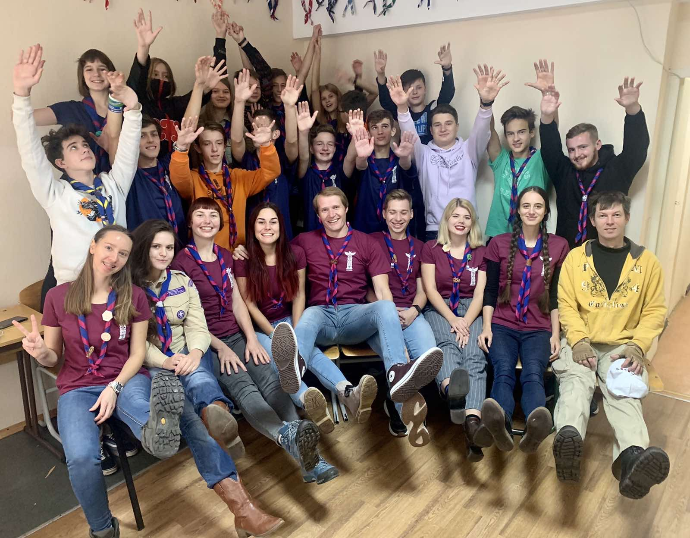
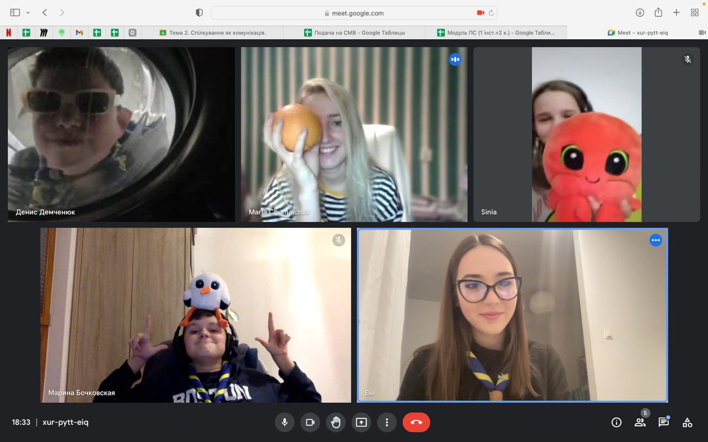
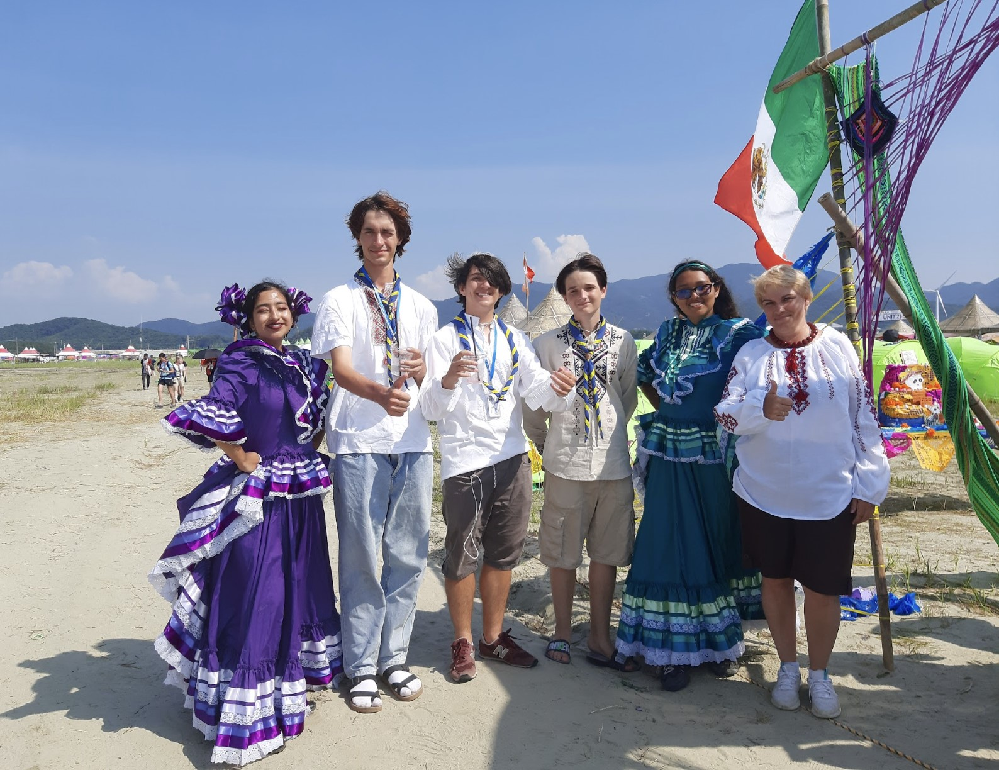

Наші заходи
Ми організовуємо різноманітні та цікаві події для наших членів різного віку, щоб вони могли вчитися, розвиватися та спілкуватися. Наші заходи ретельно розроблені, щоб надихати, кидати виклик та розвивати навички Скаутів, як більш юних, так і старших. Ми пропонуємо унікальний досвід та можливості, які залишають довготривалий вплив на наших членів. У цьому розділі ми раді поділитися з вами деталями наших найпопулярніших категорій заходів: Тренінги, Онлайн-заходи та Міжнародні заходи, які розраховані на різні вікові групи, включаючи дітей, молодих людей та дорослих.
-

Тренінги
Наші тренінги орієнтовані на Скаутів та Скаутських лідерів на різних етапах їхньої Скаутської подорожі та розроблені таким чином, щоб задовольнити потреби й інтереси членів різного віку та сприяти отриманню Скаутських умінь. Від домедичної допомоги до лідерських навичок і комунікації, ми пропонуємо винятковий освітній підхід до навчання, який виходить за рамки традиційного навчання в класі. НОCУ створює інклюзивне середовище для ефективного освоєння нових навичок, необхідних для особистого зростання, дозволяючи кожному розвиватися власним темпом.
-

Онлайн-заходи
У сучасну епоху цифрових технологій ми усвідомлюємо важливість залишатися на зв’язку. Ми надаємо гнучкі шляхи навчання, що задовольняють запити наших членів – як юних, так і дорослих Скаутів. Серед них багатогранні інтерактивні воркшопи, вебінари та віртуальні зустрічі для учасників різного віку. Ці мережеві сходини можуть проводитися як НОСУ, так і бути частиною заходів Всесвітнього Скаутингу, та охоплювати різноманітні теми. Такі онлайн-заходи, як Джемборі в Інтернеті – JOTA-JOTI також надають платформу для Скаутів з різних країн та вікових груп, аби ділитися досвідом, обмінюватися ідеями та вчитися один в одного. Це сприяє зміцненню почуття згуртованости та приналежности до єдиного Руху, навіть коли ми не можемо зустрітися особисто.
-

Міжнародні заходи
Ми беремо активну участь у міжнародних заходах, які сприяють міжкультурному обміну та співпраці між Скаутами усіх вікових секцій з різних куточків планети. Наші інтернаціональні події є інклюзивними та задовольняють різноманітні інтереси наших членів, пропонуючи релевантні активности для дітей, молодих людей та дорослих лідерів. Саме завдяки таким заходам за кордоном українські Скаути мають змогу формувати дружбу на все життя, дізнаватися про особливости инших держав та розвивати глобальну перспективу. Єдність нашого Руху відкриває нашу схожість зі Скаутами інших країн, але також показує їм різноманітність, а отже, вчить пошані та розумінню відмінностей.
-

Табори
Табори є невідʼємною частиною Скаутингу та функціонування Скаутських груп. Вони дозволяють учасникам безпосередньо втілити в життя один з елементів Скаутського методу – природу, а також навчитися незалежности та самостійности. Табори зазвичай тривають від 7 до 14 днів і проводяться на природі – у лісі, в горах або біля водойм. Впродовж цього часу таборів Скаути навчаються самостійно ставити намети, готувати їжу та здобувати нові навички. Також діти можуть підтвердити знання та отримати нашивки за проходження Скаутських випробувань. Кожен табір має свої особливости та відповідає певній тематиці, що дозволяє дітям розвиватись в різних напрямках. Літні табори зазвичай містять скелелазіння, каякінг, сплави на байдарках, творчі майстер-класи тощо. Зимові табори можуть пропонувати такі види розваг, як катання на лижах та сноубордах.
Хочеш долучитись? Розпочни свою Скаутську подорож сьогодні та
відкрий безмежні
можливості, що вже чекають на тебе!